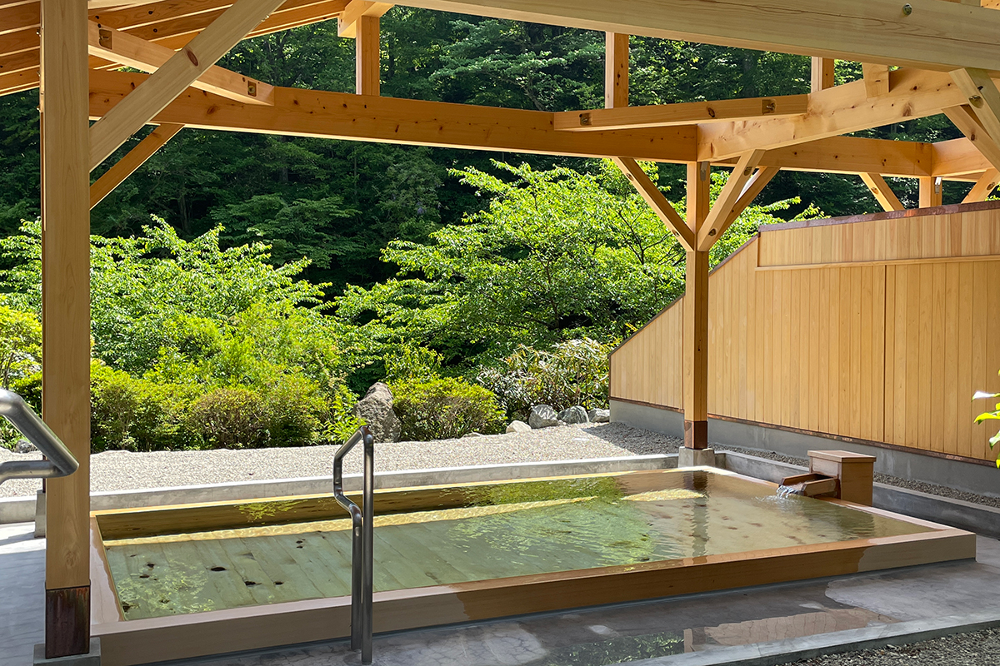
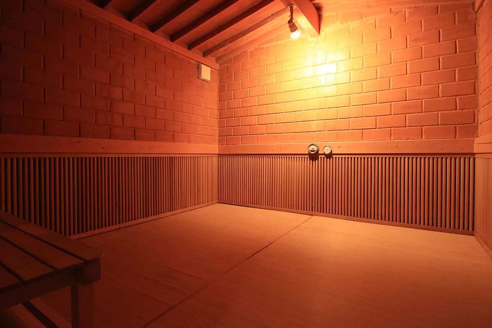
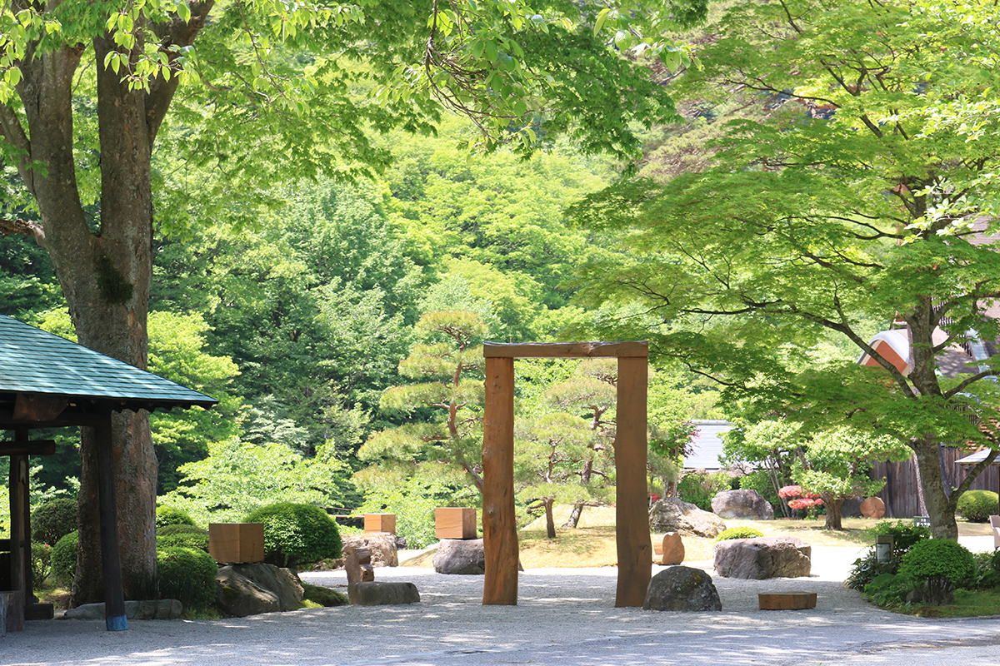
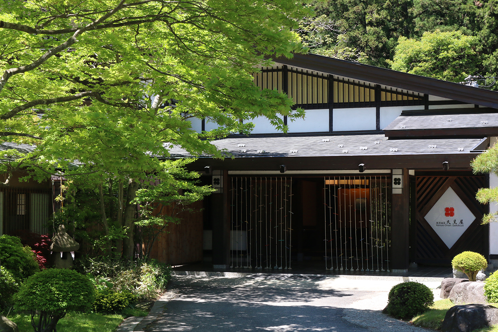
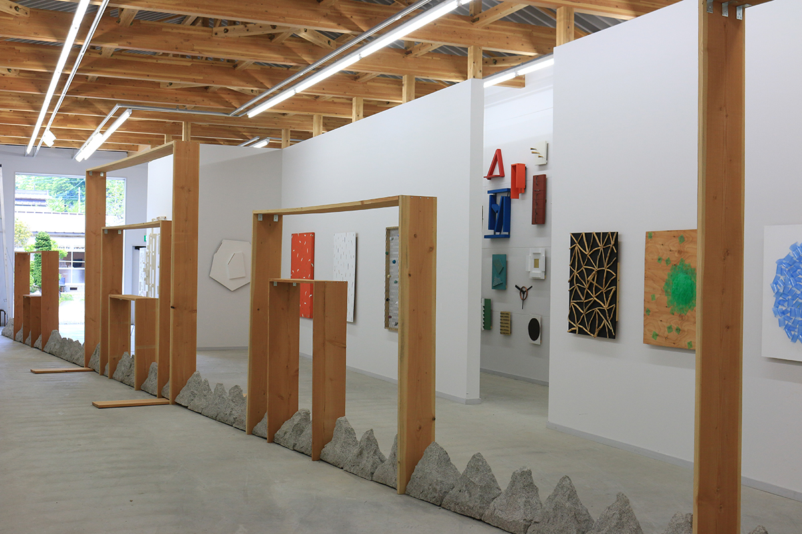
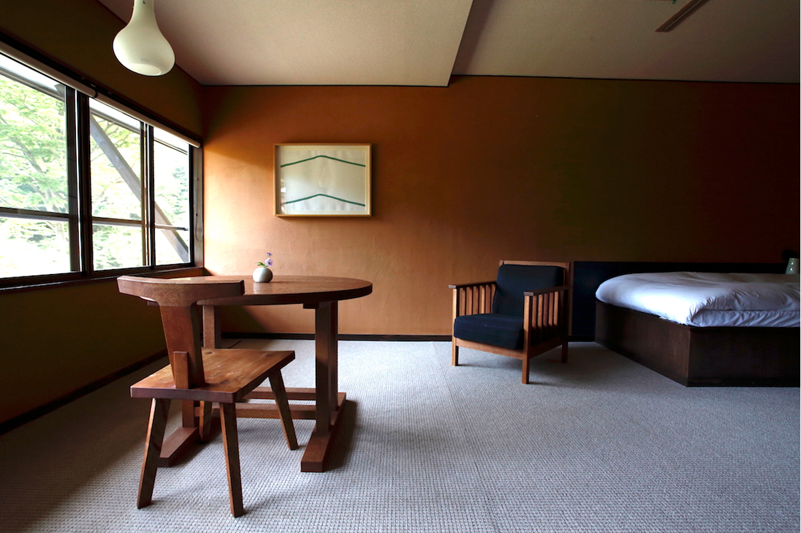
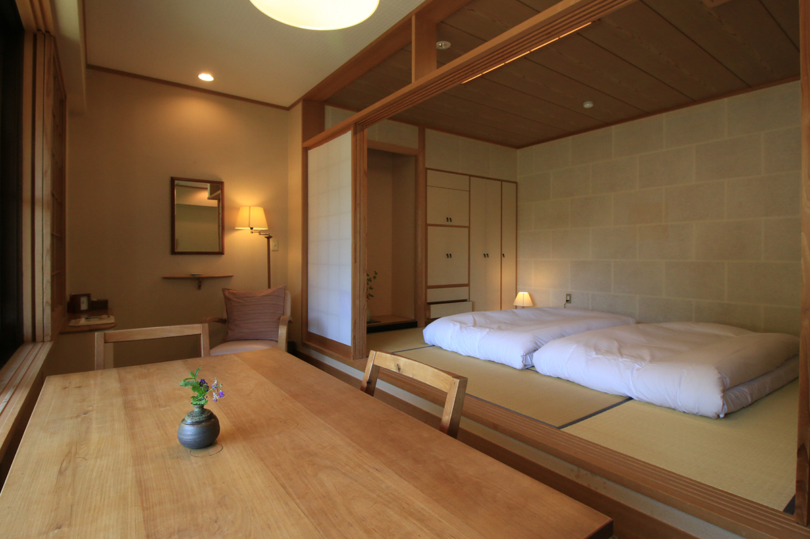
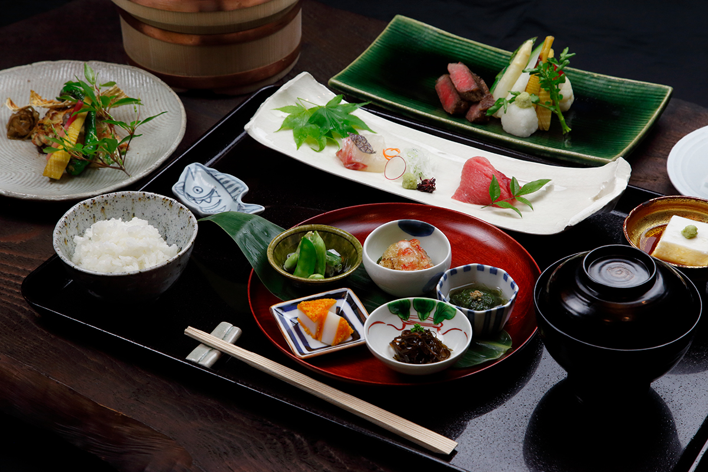

Префектура Тотиги · Итамуро · онсэн и искусство
Итамуро и Daikokuya: тихий онсэн, современное искусство и номер для одного

В онсэн лучше ехать не на одну ночь: когда никуда не нужно спешить, появляется целый свободный день и для воды, и для себя. Исследовательница онсэнов выбирает для такого отдыха Итамуро, старый лечебный онсэн, и гостиницу Daikokuya, где к воде добавляется современное искусство.
Онсэн
Лечебная вода Симоцукэ
Итамуро входит в группу онсэнов Насу, но среди соседей выделяется тишиной и долгой историей лечебных купаний. Воду здесь называли «лечебной водой Симоцукэ» (так в старину называлась провинция, на месте которой лежит префектура Тотиги), и сюда издавна ехали те, кого мучили боли в теле.
Вода щелочная, простая по составу: гладкая, мягкая и чуть прохладнее привычного. Сколько раз ни окунайся, она каждый раз успокаивает.

Искусство
Сад-инсталляция и музей-склад
Что значит гостиница «отдыха и искусства», становится понятно ещё до входа. К дому ведёт сад-инсталляция художника Кисио Суги, а за чисто японским входом открывается салон. Он же служит галереей: каждый месяц здесь выставляют работы другого мастера ремёсел.


В «Музее-складе Кисио Суги» собраны обаятельные работы художника, и кажется, будто они сами зовут подойти поближе. По музею проводят экскурсии, на них нужно записываться заранее.

Номера
Комната только для одного
Одноместные номера в корпусе «Мацу-но-яката» появились в 2013 году. Так что к 2024 году Daikokuya уже десять лет оставалась редкой гостиницей при онсэне, где одному можно остановиться в любой из 365 дней в году. К тому же в этих комнатах на редкость уютно. Окна во всех номерах выходят на юг, а у светлого окна стоят большой обеденный стол и стулья. Сразу хочется заварить любимый кофе или открыть книгу, до которой давно не доходили руки.


Ужин и завтрак приносят в номер. Еду подают на подносах сразу, горничная не заходит то и дело с новыми блюдами, поэтому есть можно не спеша и в своём ритме. Постель здесь отменная: после вечернего купания ныряешь под одеяло и спишь до самого утра.

Daikokuya
- Адрес
- префектура Тотиги, Насу-Сиобара, Итамуро, 856
- Телефон
- +81 287-69-0226
- Цены / Вход
- одноместный номер в корпусе «Мацу-но-яката» с ужином и завтраком от 26 550 иен за ночь (с налогом и налогом на онсэн)
- Заезд / выезд
- 14:00 / 11:00
- Как добраться
- есть трансфер
Вода в Daikokuya щелочная простая, температура источника около 36–44 °C, вода течёт без повторного использования. В гостинице есть прачечная и Wi-Fi, кухни для гостей нет. Цена номера указана по 2024 году.